focus cat
view the code on github ↗
a cozy pomodoro app where every minute focused buys you something new to decorate your cat's room.
built with
- Java
- JSON/Gson
- JFreeChart
- Maven
built for a real client!
four core features
- timer: pomodoro timer (alternates between 25-minute work sessions with 5-minute breaks) or choose your own custom timer (any length of time). more time focused = more coins
- to-do list: add, edit, reorder, sort tasks by date. undo/redo actions with ctrl z / ctrl y
- store: spend coins from timer on background items (cats, room decor)
- productivity tracker: a graph of your hours focused, viewable by week, month, or year
the problem
My client, a third-year university student balancing classes and running a club, struggled to keep track of deadlines and stay focused once she sat down to work. Every focus app she'd tried fell short: missing key features, frustrating to use, or too expensive. She wanted one free laptop app to manage her tasks, stay focused, and actually enjoy using, so I built it for her. I also surveyed other students to see whether this was a wider problem. Most wanted to work about 5 hours a day but managed closer to 3, and everyone who had tried a focus app rated it 5/10 or lower.
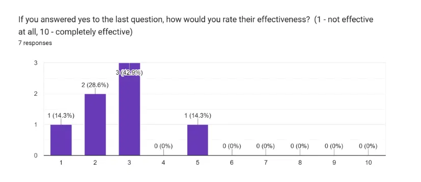
how effective students rated the focus apps they'd tried (1–10)
iterations
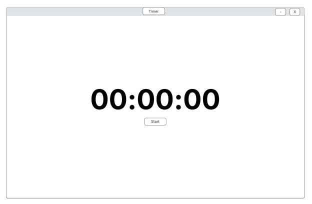
initial wireframe (timer screen)
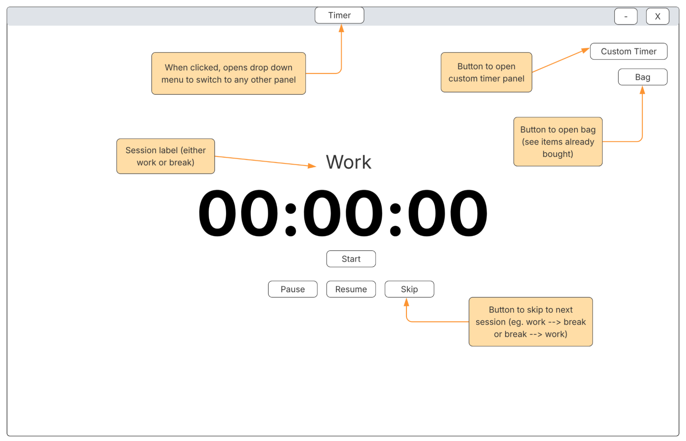
updated wireframe (pomodoro timer)
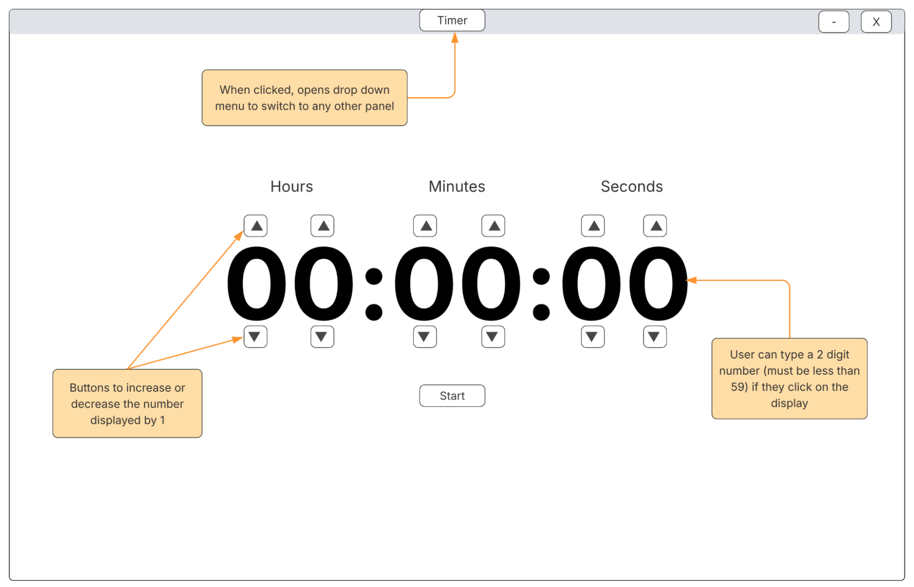
updated wireframe (custom timer)
After client feedback: the timer was buried in a menu, so I moved it to the home screen. the pomodoro timer now has pause/resume/skip controls, while the custom timer moved to a secondary panel.
visual design
design mockups
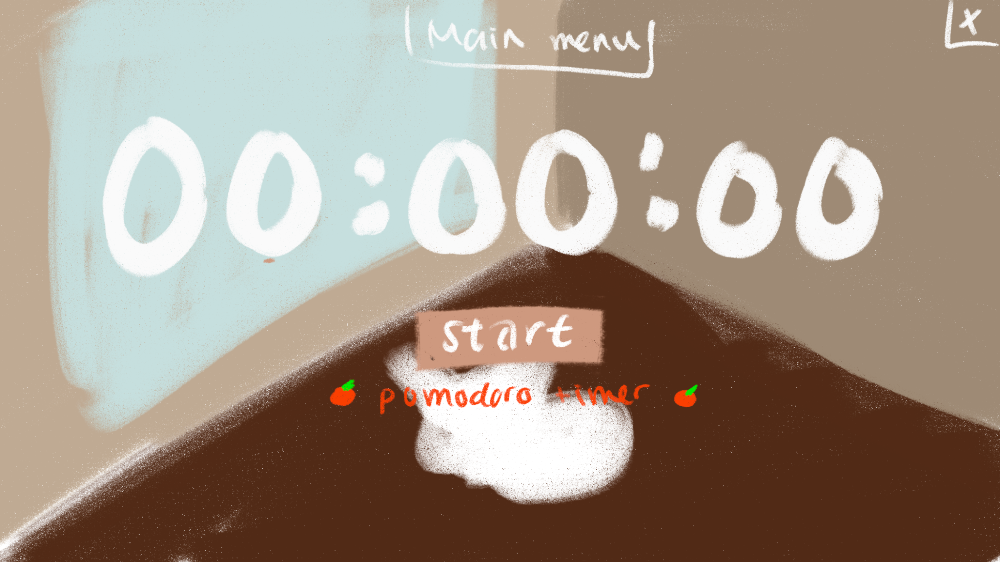
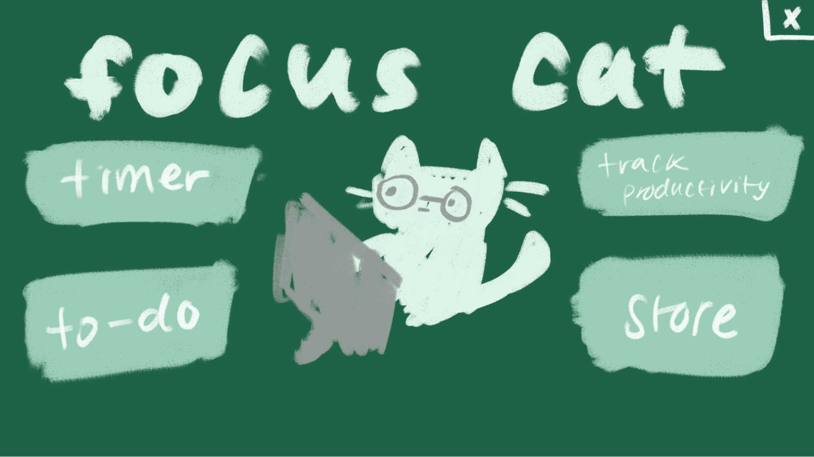
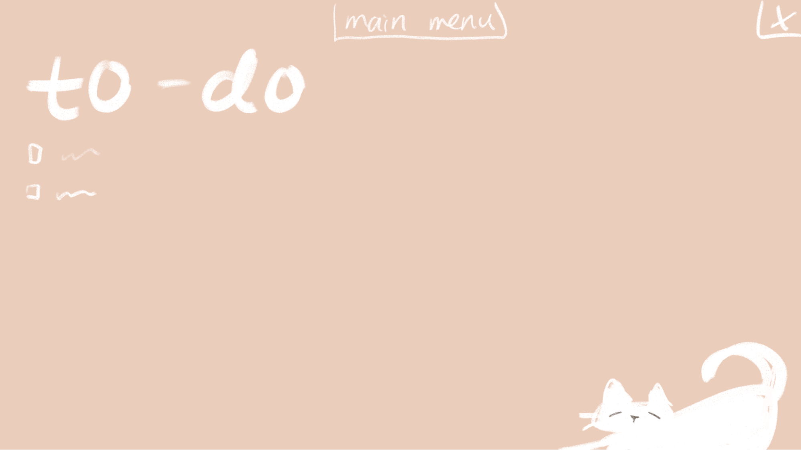
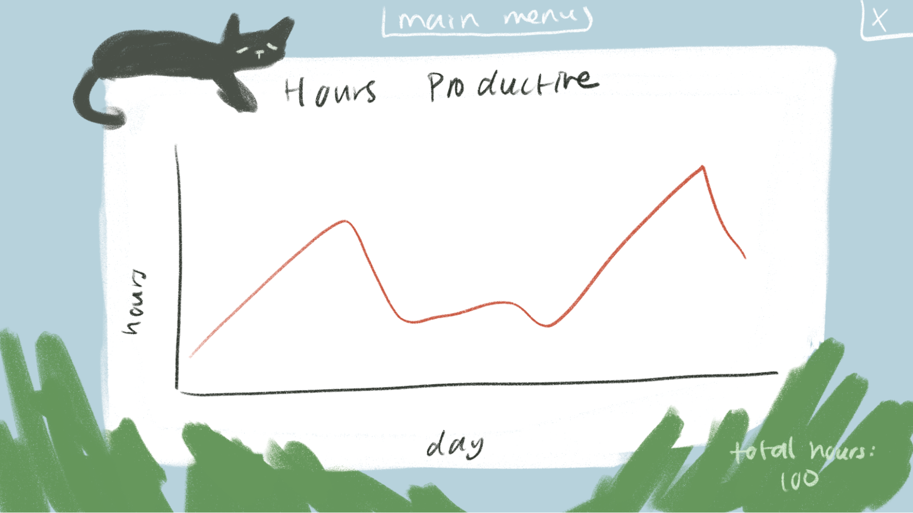
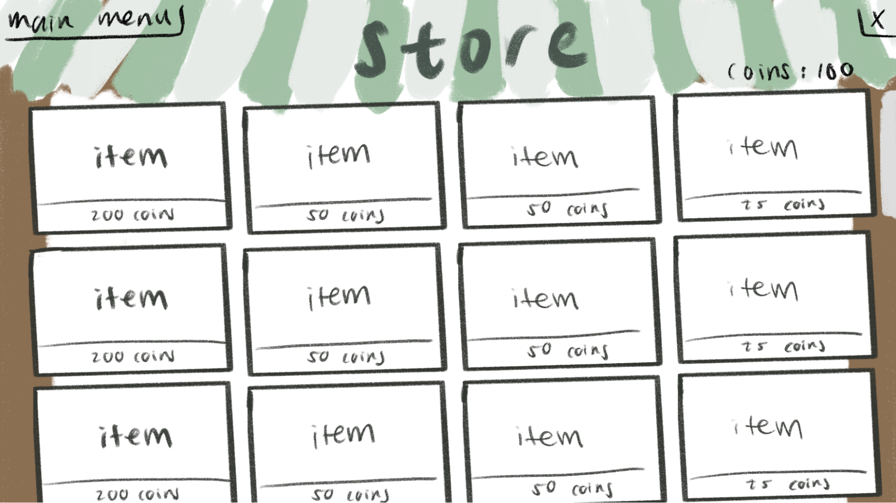
goal: make it feel like a cozy room, not a productivity tool. hand-painted every background and all the store items to achieve this effect!
code architecture
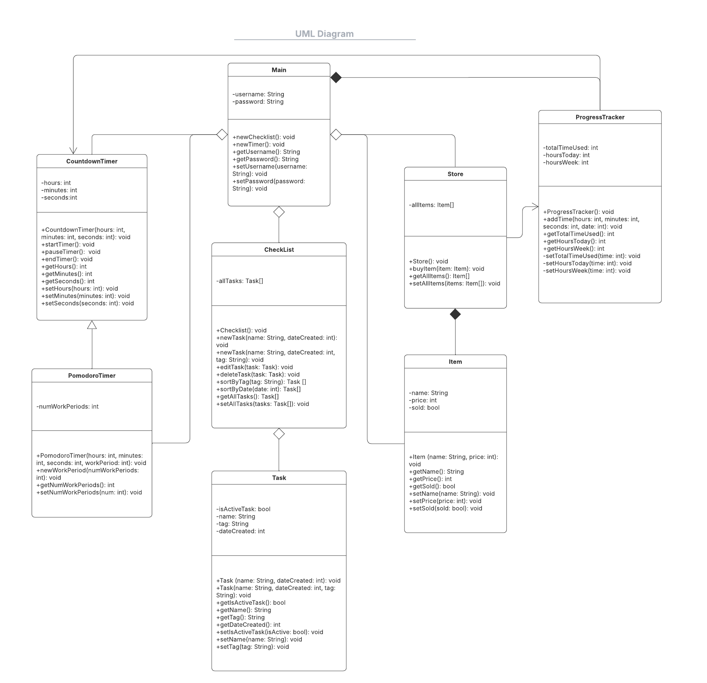
initial uml diagram
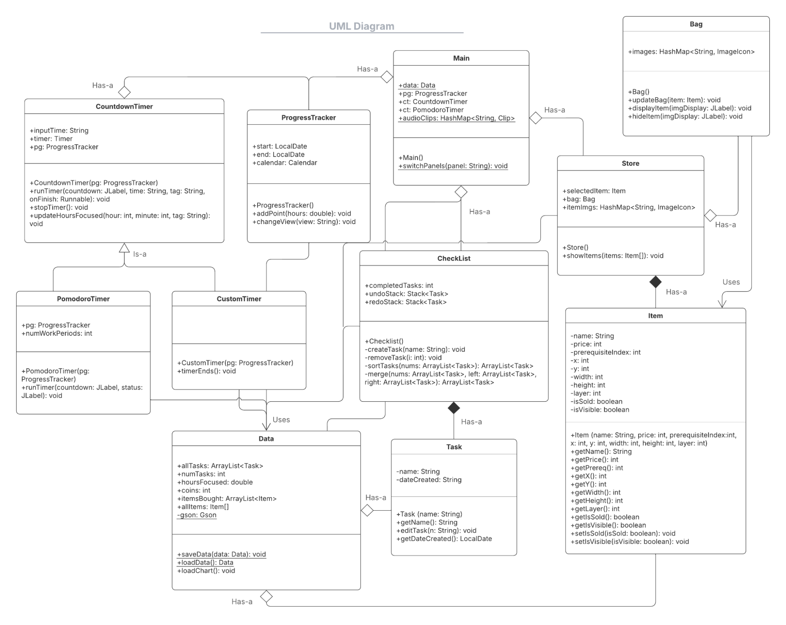
updated uml diagram
updates to the structure:
- removed login (use local storage through gson instead)
- split timers into Pomodoro and Custom subclasses
- gave the checklist undo/redo stacks
reflection + what's next?
Building for a real person changed how I designed. My first wireframes missed a few key details my client was looking for, like the custom timer. but after her feedback, I restructured the app to match her requests. It taught me to take the design process slowly and check in at each stage, so I could catch mismatches in expectations before building on them.
future improvements:
- block distracting websites during focus sessions
- implementation: create a chrome extension using HTML and JavaScript that can sync to the app
- cloud sync and backup
- allows saving data across multiple devices
- extra layer of security so data is saved even if local file is destroyed
- implementation: use an API such as Google Drive API